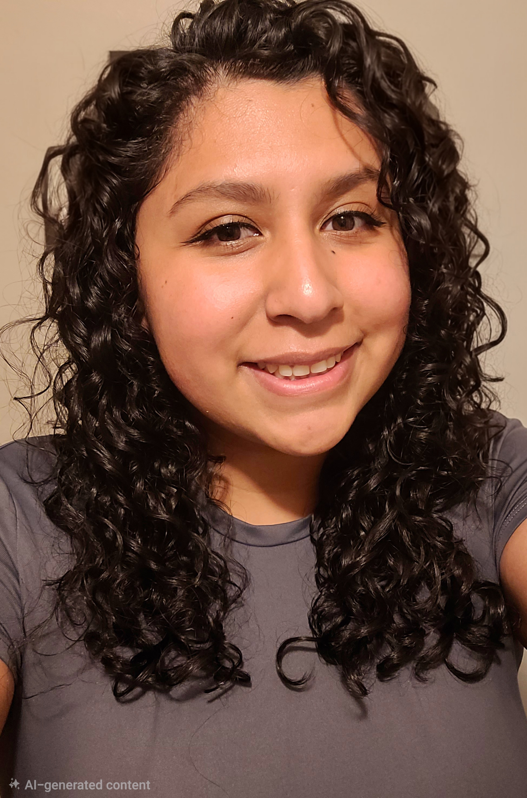

Welcome to my
Cybersecurity
Portfolio!
I'm Laurent, a cybersecurity student with security engineering internship, IT support, and customer service experience; exploring how systems are attacked, defended, and supported.
Learning Through Doing.
Explore my cybersecurity and technology work, or visit the Criminal Justice tab for the projects I've worked on at SLCC that I’m proudest of!
Cybersecurity & Technology
Security Labs, Cryptography Research, and Technology Projects from my studies at Utah Valley University.
A technical curiosity.
With a people-first foundation.
My interest in cybersecurity began with criminal justice coursework and the role of digital devices in investigations. Today, I'm especially interested in offensive security, threat hunting, and cybersecurity auditing.

I'm pursuing a B.S. in Information Technology with an emphasis in Cybersecurity at Utah Valley University.
My Conduent security engineering internship gave me experience with detection rules, XQL queries,
alert analysis, and incident response automation in Cortex XSIAM.
My previous IT support roles built a foundation in identity, access, endpoints, and user support.
I bring an investigator's mindset to cybersecurity, combining technical skills, critical thinking,
and curiosity to uncover threats, solve problems, and protect what matters.
Expected graduation: April 2027.
Security & investigation
Cortex XSIAM · XQL · Detection rule development · Alert analysis · Wireshark · Nmap · Kibana · Metasploit · Elasticsearch
Systems & identity
Active Directory · Microsoft 365 / Azure · Linux · Windows · Ubuntu
IT operations
NinjaOne (RMM) · Barracuda · ServiceNow · Zendesk · Device Provisioning · Technical Documentation
Programming & Foundations
HTML · CSS · Python · AES · RSA · HMAC-SHA256
Certifications
UVU Network Administration Academic Certification (April 2026) · TestOut PC Pro (April 2024) · TestOut IT Fundamentals Pro (December 2023)
Currently Working Towards Secuity+ & Network+ CompTIA Certifications
Degrees: A.S. in Information Technology, UVU · A.S. in Criminal Justice, SLCC
From Customer Support to Technology Support.
Security Engineer Summer Intern
Conduent Inc., June – August 2026Developed exclusion rules, prevention policies, and correlation rules; created XQL queries; and reviewed alerts to refine detection logic. Built an agentic AI assistant integrated with Cortex XSIAM and aligned with the NIST incident response lifecycle to automate incident response workflows.
IT Technician
Mountain Land Physical Therapy, July – October 2024Supported account and group administration, Microsoft 365 licensing, employee onboarding, device provisioning, VPN connectivity, and email security troubleshooting. Configured VPN access and supported secure remote connectivity.
Technical Customer Support Representative
Digication Inc., July – October 2023Provided remote technical support for clients, developing clear troubleshooting and communication skills. Created and managed user accounts with enforced access controls.
Product Support Tier II
Rad Power Bikes, June – November 2022Helped customers diagnose technical issues and translated troubleshooting steps into accessible, practical guidance.
Building my offensive security skills to protect people.
I want to deepen my skills in penetration testing and threat hunting while bringing an IT support perspective to protecting systems. What sets me apart is my ability to approach cybersecurity from both a technical and investigative perspective. With a foundation in criminal justice and hands-on IT experience, I bring curiosity, critical thinking, and a passion for understanding not just how security threats happen, but why they happen.